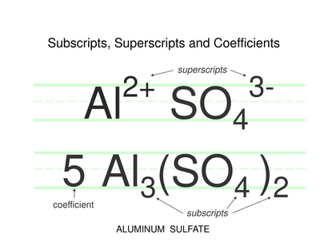

Chỉ số dưới

Image source: Topic 3 image sources
| Vietnamese | Chỉ số dưới |
|---|---|
| English | Subscript |
| Pronunciation | /ˈsʌbskrɪpt/ |
| Word type | Noun |
Meaning (Vietnamese)
Chỉ số dưới
Meaning (English)
A small number written below and to the right of a chemical symbol to indicate the number of atoms.
Example
In the formula CO₂, the subscript 2 indicates that each molecule contains two oxygen atoms.
Trong công thức CO₂, chỉ số dưới 2 cho biết mỗi phân tử chứa hai nguyên tử oxygen.
Another definition from the notes
Chỉ số nhỏ viết ở phía dưới bên phải của ký hiệu hóa học cho biết số nguyên tử
A small number written below and to the right of a chemical symbol to indicate the number of atoms
Another definition from the notes
Small number below and to the right showing atom count.
Source of information: Topic 3 notes (see Sources)